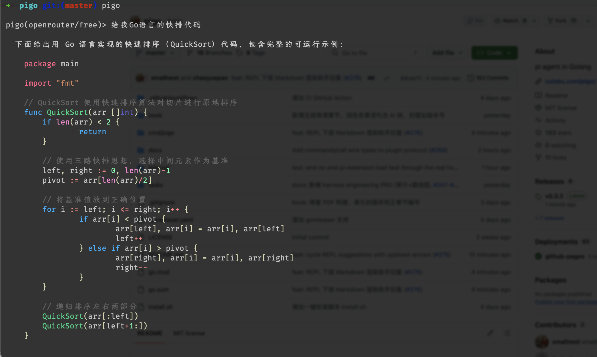

# 无头：把 diff 从 stdin 喂进去，结果流式输出后退出
git diff | pigo -p "总结这个 diff，指出潜在风险"
# 无头 + JSON，供 CI 解析
pigo -o json -p "列出仓库里所有 TODO" | jq -r '.text'
# 交互：不带提示进入 TUI
pigo
> 帮我把 auth 中间件的测试补齐
> /think # 开启深度思考
> /compact # 手动压缩上下文# 按模型名自动路由到对应 provider
pigo -m claude-opus-4-7 # → Anthropic
pigo -m gpt-5 # → OpenAI
pigo -m deepseek-v4-pro # → DeepSeek（也支持 deepseek-v4-flash）
# 指向任意 OpenAI 兼容端点（本地 Ollama）
pigo -u http://localhost:11434/v1 -m qwen3
# TUI 中实时切换，无需重启会话
> /models # 列出可用模型
> /model glm-4.6read | |
write | |
edit | |
grep | |
find | |
bash | |
todo | |
webfetch |
# 模型在一条消息里派发多个 task 子 Agent → 并行跑
task "审计 internal/auth 的越权风险，返回清单"
task "统计仓库里所有 TODO/FIXME 并按目录归类"
task "给 parser 包补齐表驱动测试"
# 进程隔离由环境变量选择并发上限
PIGO_MAX_SUBAGENTS=8 pigo -p "并行重构这三个模块"# TUI：Ctrl+V 粘贴截图 → 输入框出现 [Image #1]
> 这个报错截图是什么原因？ [Image #1]
# 任意提示里直接引用本地图片（无头也可用）
pigo -p "照着 @image:./design.png 实现这个页面"
pigo -p "解释这张架构图 "# 提取最终回答文本
pigo -o json -p "列出仓库的 TODO" | jq -r 'select(.type=="final").text'
# 实时观察每一次工具调用
pigo -o json -p "跑测试并修复失败" \
| jq -r 'select(.type=="tool_call") | .name + " " + (.args|tostring)'# 越靠近当前目录的指令文件优先级越高
repo/PIGO.md # 项目级：技术栈、约定
repo/backend/CLAUDE.md # 后端子目录：额外覆盖规则
repo/backend/api/ # ← 在此运行 pigo，两份都会加载，api 最近者最优先pigo -r # 续跑最近会话
> /fork # 从当前节点分叉：试方案 A
> /tree # 查看会话树
● main
├─ fork-a 尝试重构为接口
└─ fork-b 尝试保留 switch ←> /compact # 手动压缩
… 上下文自动压缩：128k → 12k tokens，保留关键决策与文件状态> /memory # 查看/管理记忆
◆ 记住：本项目用 zsh + Go 1.27，偏好 squash 合并
◆ memory_search "上次我们怎么处理 auth 中间件的？"> /memory # 查看记忆库状态：条目数、窗口、占用
◆ memory_search "auth 中间件上次怎么改的？"
→ projects/auth.md (score 0.82) 近三次改动的决策与踩坑
→ feedback/testing.md (score 0.41) 集成测试必须打真实数据库> /rebuild # 手动在最近检查点处重建上下文
… Preparing conversation context… # 等待进行中的检查点写入
● 边界前 96k tokens → 检查点摘要；近 8 轮逐字保留；召回 2 段相关记忆# ~/.config/pigo/hooks/pre-tool-use.sh
# 退出码非 0 → 拦截该工具调用
case "$PIGO_TOOL_ARGS" in
*"rm -rf"*) echo "拒绝：危险删除" >&2; exit 1 ;;
esac